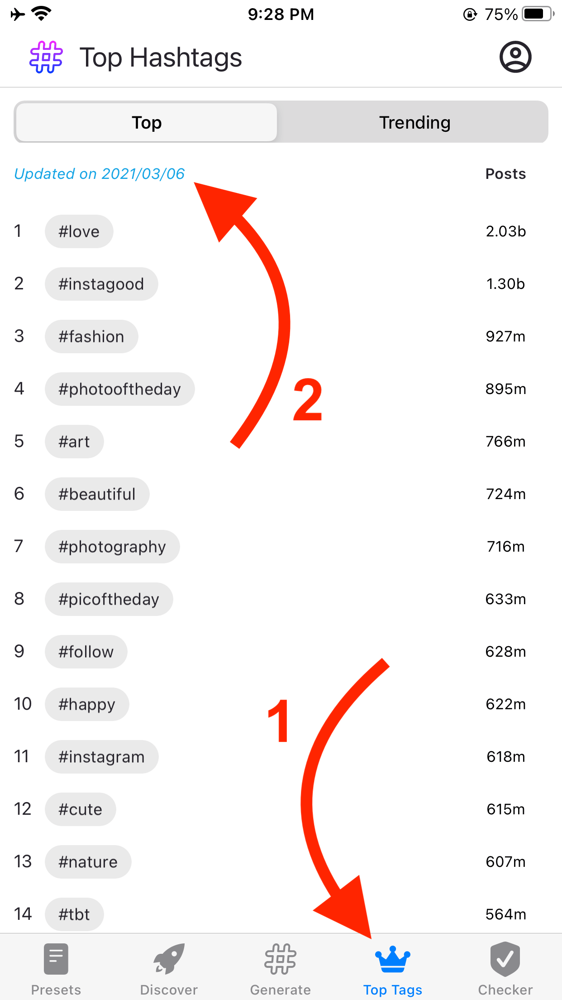
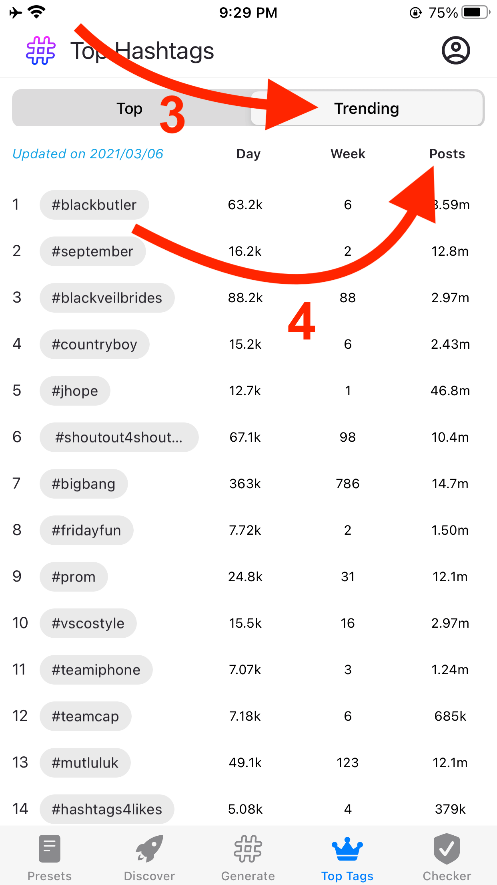
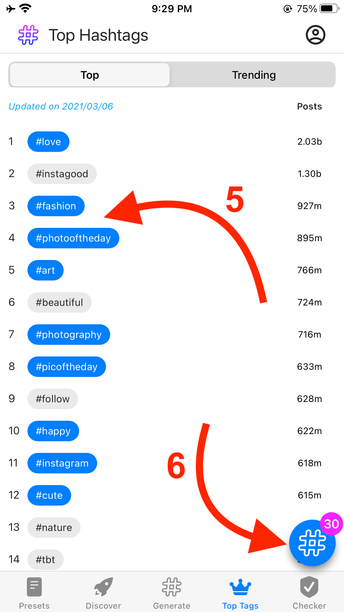
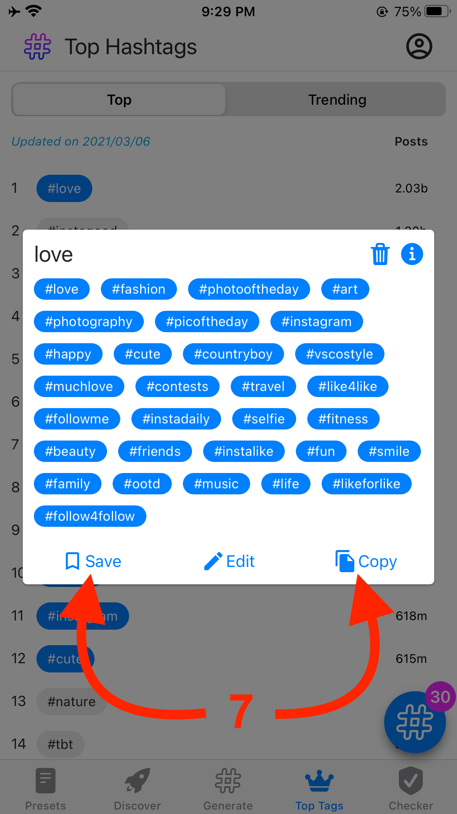

I think one of the most important parts of our app is the Top Tags section. Hashtag Smart app shows the top 250 hashtags with the highest number of posts on our Top Tags section. Just click the Top Tags icon (1) at the bottom. You can see the Top 250 hashtags on Instagram with their number of posts. No worries, we refresh the post numbers very frequently (2)
Just keep in mind that the most popular Instagram hashtags are not necessarily the most effective ones. Most popular hashtags have millions of posts on them and your posts might get lost. You should always blend them with trending hashtags (3). Hashtag Smart app tracks how many posts shared under hashtags every day. If it detects a higher number of posts compared to the average daily posting in the last week, then the hashtag is shown under the trending section. You can also see the total number of posts shared in the hashtags on the right side. Just tap on 'Posts' text to sort them by post number (4)
Now you know where to find the top and trending hashtags, just tap on them (5) to add to your Hashtag Pool! After collecting some popular and trending hashtags, tap on the hashtag pool icon at the left bottom (6)
Now you can copy them to your clipboard or save them to use later (7). Instagram suggests using popular and niche hashtags together to reach specific and bigger audiences at the same time.
Let me know if you need any help. I will happy to assist you :)
Jessica Ross